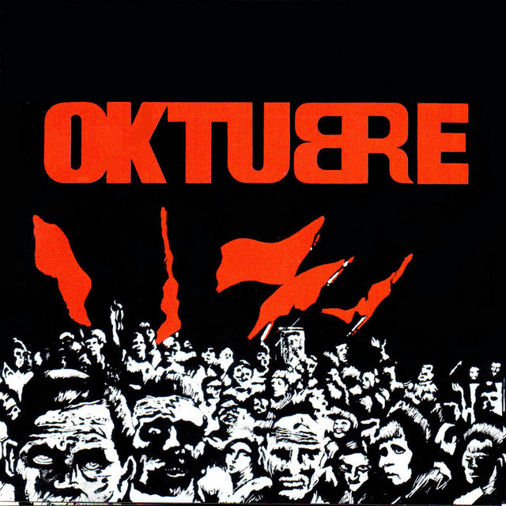

El arte de tapa, diseñado por el artista plástico Rocambole, está inspirado en la Revolución rusa de 1917.

Oktubre es el segundo álbum de estudio de la banda. Fue editado en octubre de 1986. Grabado a mediados de 1986, el álbum se caracteriza por un sonido que incorporó influencias del new wave y el post-punk (lo cual significó un cambio con respecto a su álbum anterior, Gulp!), y por su narrativa con elementos distópicos, inspirada por las revoluciones sociales históricas y el contexto bélico internacional de la Guerra Fría, así como también del escenario político de Argentina en el período de la vuelta a la democracia.
En 2007, la versión argentina de la revista Rolling Stone situó a Oktubre en el puesto n.º 4 en su lista de "Los 100 mejores álbumes del rock argentino".
En este album se encuentra probablemente una de las canciones mas conocidas de la banda y del rock nacional,estamos hablando de "jijiji"
Canciones:
- «Fuegos de octubre» 3:37
- «Preso en mi ciudad» 4:03
- «Música para pastillas» 4:34
- «Semen-Up» 5:21
- «Divina Tv. Führer» 3:01
- «Motor psico» 4:56
- «Jijiji» 5:34
- «Canción para naufragios» 6:01
- «Ya nadie va a escuchar tu remera» 3:59